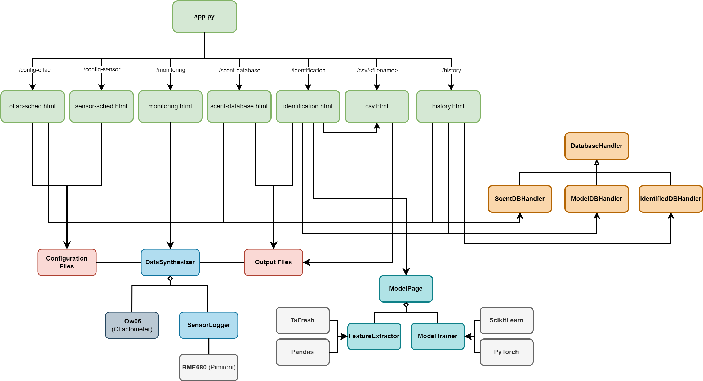
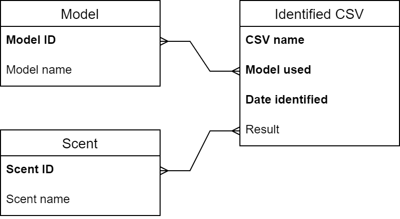

System Architecture

The above diagram shows the overall system architecture of our project. The user interface, run from the
Data collection system
The output of the data synthesizer is stored in two seperate folders:
The CSV files in the
The CSV files in the
Machine learning system
The machine learning system is made up of three modules:
Databases
The databases are all stored in CSV files. They are read with database handler classes, which each handle the individual formats for the databases. Each database handler class inherits from the abstract parent class
Our full web application structure is as shown:
Each of the pages on the web application have a function which the URL is routed to, which displays the respective pages. Each functionality on the UI which requires a response from the server has each own route and function which accesses the other back-end functionality and files where required. These functions are called via AJAX requests from the front-end.
Since the web server is running concurrently with the data collection system on the Raspberry Pi, it allows easy access to controlling the hardware, accessing the databases and using the machine learning models.
The above diagram shows the overall system architecture of our project. The user interface, run from the
app.py file, consists of 7 main pages which access the functionalities of the following major classes, modules and files on the back-end:- Data collection system:
DataSynthesizer,Ow06andSensorLoggr - Machine learning system:
ModelPage,FeatureExtractorandModelTrainer - Databases:
ScentDBHandler,ModelDBHandlerandIdentifiedDBHandler - Configuration and output data files
Data collection system
DataSynthesizer is the main class which handles the automated data collection system. It makes use of the Ow06 class, which controls the olfactometer and was provided to us by OWidgets, and the SensorLogger class, which controls the BME680 sensor.The output of the data synthesizer is stored in two seperate folders:
raw and features. The raw folder contains the raw data from the sensors and olfactometer, while the features folder contains the processed data. The data is stored in CSV format for easy access and manipulation.The CSV files in the
raw folder store the raw readings and data from the sensor and olfactometer recorded during data collection. They contain the following fields: DataPoint|Time(s)|ScentNum|Stabilizing|ChanOn|ScentDuration(s)|Temp(C)|Pressure(hPa)|Humidity(%)|HeaterIndex|HeaterTemp(C)|HeaterDur(ms)|Resistance(Ohm).The CSV files in the
features folder contain fields including the mean, median, mode, standard deviation, and other statistical measures of the raw data. They are generated in between data collection cycles, while the sensor stabilises.Machine learning system
The machine learning system is made up of three modules:
ModelPage, FeatureExtractor and ModelTrainer.FeatureExtractor handles the extraction of features from the raw data collected by the data collection system. It is used for automatic feature extraction during data collection, and for processing data during the training process.ModelTrainer handles the training of the model using the extracted features. It uses the extracted features to train the model, and then saves the model to a file for later use.ModelPage is a wrapper class which uses functions from both the FeatureExtractor and ModelTrainer classes to extract features and train the model. It also handles identification from a given file. This class neatly packages the functions from the other two classes into 9 steps to train a model, beginning at feature extraction and ending at saving the model:- Load raw features
- Manually select features
- Pre-process data
- Set block configuration
- Construct model
- Prepare training
- Train model
- Plot metrics
- Save model
Databases
The databases are all stored in CSV files. They are read with database handler classes, which each handle the individual formats for the databases. Each database handler class inherits from the abstract parent class
DatabaseHandler. The storage formats for each database, and how they are handled by the individual classes, can be found in the Implementation page. Below is a database schema showing the relationships between the databases:

Web Application StructureOur full web application structure is as shown:
- Green boxes: Main web pages
- Blue boxes: Web applications involving
ModelPage - Orange boxes: Database handler classes
- Purple boxes: Miscellaneous helper functions
Each of the pages on the web application have a function which the URL is routed to, which displays the respective pages. Each functionality on the UI which requires a response from the server has each own route and function which accesses the other back-end functionality and files where required. These functions are called via AJAX requests from the front-end.
Since the web server is running concurrently with the data collection system on the Raspberry Pi, it allows easy access to controlling the hardware, accessing the databases and using the machine learning models.
UI Design
Design principles
In designing our UI, we followed key design principles to ensure that our interface was user-friendly and intuitive. Below are the key principles we followed and how we implemented them.
Simplicity refers to keeping interfaces clear, straightforward, and easy to understand for users. This can be done by removing clutter and presenting information clearly and concisely. We did this by:
Consistency ensures that elements, patterns, and interactions within the UI are uniform and predictable across different screens and contexts, allowing the user to navigate the UI more efficiently. We did this by:
Visibility refers to making important elements, actions, and status indicators clearly visible and easily accessible to users, helping them understand what they can do and what is happening within the interface. We did this by:
Affordance refers to designing elements in a way that indicates to users how to interact with each element, helping them understand what actions are possible within the interface. We did this by:
Mapping involves aligning the layout and organization of elements with the actions or functions they represent, making it easier for users to understand the relationship between controls and outcomes. We did this by:
Constraints set limits or boundaries on user interactions within the interface, guiding users towards desired actions and preventing errors or unintended outcomes. We did this by:
Sketches
We designed our UI by meeting with our client and discussing their requirements. We then created the following sketches based on their feedback:
Interactive prototype
We used Figma to build an interactive prototype, which can be found here:
In designing our UI, we followed key design principles to ensure that our interface was user-friendly and intuitive. Below are the key principles we followed and how we implemented them.
Simplicity refers to keeping interfaces clear, straightforward, and easy to understand for users. This can be done by removing clutter and presenting information clearly and concisely. We did this by:
- Keeping elements such as data tables small, with a scroll bar, to prevent them from cluttering the screen when they have large amounts of data being displayed
- Using large, bold titles to indicate what the page is for, followed by smaller titles for each important section of the page to indicate their purposes
Consistency ensures that elements, patterns, and interactions within the UI are uniform and predictable across different screens and contexts, allowing the user to navigate the UI more efficiently. We did this by:
- Using the same headers, subheaders, and text font sizes and colors in every page
- Ensuring the consistent size and colors of buttons and dropdown lists
Visibility refers to making important elements, actions, and status indicators clearly visible and easily accessible to users, helping them understand what they can do and what is happening within the interface. We did this by:
- Clearly labeling buttons with both text and representative colors to let the user know their function
Affordance refers to designing elements in a way that indicates to users how to interact with each element, helping them understand what actions are possible within the interface. We did this by:
- Indicating a field is a dropdown list with a small downwards-facing triangle
- Highlighting buttons with a darker border to indicate clickability
Mapping involves aligning the layout and organization of elements with the actions or functions they represent, making it easier for users to understand the relationship between controls and outcomes. We did this by:
- Placing buttons near the elements they affect (e.g., "Add row" button at the bottom of the table for schedules)
- Positioning required input fields (e.g., file names) next to the buttons for submission to indicate to the user that they should fill in the field first
Constraints set limits or boundaries on user interactions within the interface, guiding users towards desired actions and preventing errors or unintended outcomes. We did this by:
- Using a dropdown list for selecting scents in the olfactometer schedule to prevent users from selecting a non-existent scent
- Utilizing a sliding input to set the repetition rate, preventing users from entering a value out of the acceptable range
- Replacing the start button with a stop button when clicked and vice versa, preventing users from starting or stopping the data collection system multiple times
Sketches
We designed our UI by meeting with our client and discussing their requirements. We then created the following sketches based on their feedback:
Interactive prototype
We used Figma to build an interactive prototype, which can be found here: